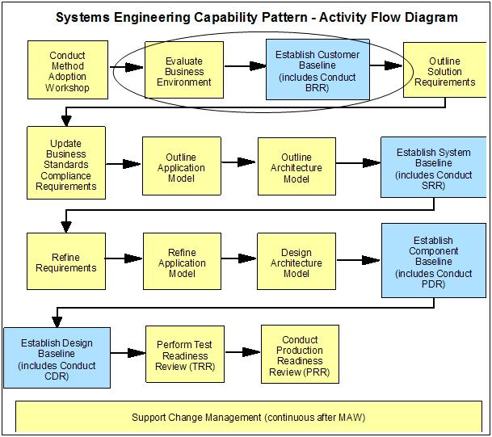
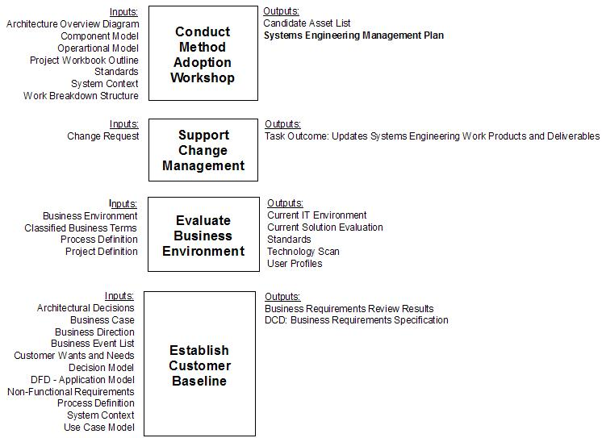

1 Description
In an Enterprise SE&A project, the Customer Baseline contains the customer’s requirements as a basis for the
subsequent technical work needed to implement those requirements.
Figure 1 - Customer Baseline major activities in SE Capability Pattern

During the investigation of the Business Environment and the establishment of the Customer Baseline, a number of work
products will be received or developed which could have performance implications. As with any new technical project or
assignment, during this stage the performance engineering team must begin by becoming familiar with the customer’s
business and IT environments. During this stage, the SE Capability Pattern specifies a number of work products whose
contents may provide background information that the PE team will find useful.

The performance engineering team formed during the PE PDW has a vested interest in ensuring that the performance and
capacity aspects of the customer’s requirements are well-defined, and that the business rationale for these
requirements are well understood. This will prove helpful to the later SE&A baselines as the requirements are
elaborated and measures of success are defined, which will in turn enhance the likelihood that the overall project will
satisfy the customer’s requirements. Deliverables which are deemed deficient from a performance and capacity standpoint
may lead to the entry of a defect, which is then taken into account during the BRR Scorecard process.
Around this time, the PE team should be developing an overall strategy for applying PE throughout the life of the
project, mapping appropriate PE activities and deliverables to the Enterprise SE&A baseline with which they will
coincide. This strategy should not only take into account PE work done in support of SE&A activities (i.e.
requirements and design participation, volumetric and technical research, early estimation and modeling), but also PE
work done in support of implementation, testing and deployment activities.
2 Usage Context
This technique paper should be used as a guidance on applying PE activities and techniques in support of Customer
Baseline Phase.
3 Content
Organizing the PE Effort during the Customer Baseline Phase
During the activities leading up to and including the BRR, the goal of PE management is to ensure that the
performance engineering team is positioned to effectively contribute to the business planning process. To make this
happen, a number of things need to be considered.
-
Governance relationships – What is the relationship of the PE team, SE team, development and other
groups to the management structure? Is there a project office that oversees the extended team’s activities
for this project, or is there a program office which oversees multiple projects or releases? Is there a
systems engineering management team or one or more design authority teams which have responsibility for
different parts of the emerging solution? What are the rules for interacting with the customer or project
sponsor when working on business requirements? Understanding the governance relationships will make it much
easier to secure the resources and management support needed to carry out performance engineering
responsibilities, particularly if this is done early in the project life cycle.
-
Team relationships – If the PE PDW has already been conducted, this should aid in developing
relationships between the performance engineering team and other teams (SE, architecture/design,
development, test, operations, etc.). Understanding the team relationships will make it much easier to work
jointly on defining the business requirements and developing the performance engineering strategy.
-
Project resources and planning – Which group will the performance engineering team be part of, and
how will it be staffed? Will the PE team be aligned with the SE team, the architecture/design team, the
performance testing team, or will it be an independent team in its own right? How will it be staffed? What
skills are required? To support the BRR and the PE strategy, strong skills in planning, requirements and
analysis are required, but later stages will require performance skills that are more technology-specific
or implementation-specific.
-
Technical and project risks - To support the BRR and the PE strategy, the primary risk management
activity of the PE team will be to ensure that the non-functional requirements (NFRs) which relate to
performance are sufficiently well-defined and are accepted by the stakeholders. Understanding what
constitutes success when it comes to solution performance will make it much easier to understand what
constitutes failure and the risk thereof.
During this stage of the project, the PE team will be concerned with
The Customer Baseline is developed as a standard part of the SE&A baseline review process. However, the PE
Strategy needs to be spelled out in more detail, since it will address performance engineering activities which go
beyond the standard SE&A baseline review process.
Developing the PE Strategy
A Performance Engineering strategy establishes the overall direction and approach for applying PE methods and
techniques during a given project. The strategy document should describe, at a high level:
-
Who will be responsible for overseeing the performance engineering aspects of the project;
-
What performance engineering methods and techniques will be applied during the various project phases;
-
How the extended PE team will address performance requirements and performance and risk management
throughout the life of the project.
If the project involves changes to an existing system, it is important to start by learning the performance
engineering strategy, if any, that is already in place. If there are processes that are already in place and have
been used with some measure of success, that may have a bearing on the strategy to be used going forward. If the
new project involves higher levels of risk and complexity or more stringent performance requirements, then the
performance engineering strategy will need to change accordingly. When proposing changes to a previous performance
engineering strategy, it is best not to denigrate what has been done in the past, but rather emphasize how the new
strategy is intended to address a new set of needs.
By now, much of the “raw material” needed for developing the performance engineering strategy document should have
been captured in the PE project definition workshop mentioned earlier. Guidance from this technique paper can
contribute to the strategy as well. However, every project is different, so it is not generally possible to use
identical performance engineering strategy documents for different projects. There are several reasons for this.
-
For GS Method projects in general and SE&A projects in particular, the work breakdown structure and
other assets related to the overall project are tailored to each project or engagement situation. For
example, if the IBM team is only involved in working on a subset of the “normal” project phases, work
products and deliverables, so likewise it is possible that only a subset of the “normal” performance
engineering activities may be included in the scope of the PE strategy.
-
There may be resource or schedule limitations on how much performance engineering work that management is
willing to sponsor. If this is the case, the performance engineering team should again adjust the scope of
the PE strategy while documenting the risks associated with excluding certain levels of PE
involvement.
-
The IBM team may have become involved in a troubled project where there are known performance problems, so
that a mixture of remediation, tactical work and strategic work affecting performance is taking place
concurrently. While this may not typically be the case on SE&A-managed projects, it is nonetheless true
that PE teams are often looked upon to fix existing problems as well as avoid future ones.
-
The responsibilities within the scope of performance engineering may have been divided between multiple
groups, departments, organizations and/or enterprises. While this is not in and of itself unusual, this may
make it difficult to sell the idea of establishing a performance engineering strategy which spans areas
outside of the immediate control of the PE team. In these cases, it is generally best to develop the PE
strategy document anyway and simply acknowledge that there are multiple dependencies on other groups.
The PE strategy document should contain the following. [see footnote2]
-
Introduction: This section is an introduction to the PE strategy work product. It describes the
document, its purpose and, if appropriate, provides project background.
-
Scope: The scope defines the boundaries of the performance engineering effort. At the PE strategy
level, this description should coincide with the scope of the Customer Baseline and the current IT systems
which will be affected by the solution implementing these requirements.
-
Assumptions: Any underlying assumptions for the PE strategy are clearly stated in this
section.
-
PE Goals: Describe the tangible goals of performance engineering. PE objectives can be at varying
levels of detail. At the PE strategy level, the objectives set the tone and direction for how performance
engineering is going to be done.
-
PE Focus Areas: PE focus areas are those critical performance requirements of the solution that must
be met to provide the expected level of confidence in the application or system. If there are any such
requirements from the RFP, or from discussions with the client, as to what areas the client considers
critical to the business or to the technology implementation, these may be captured in this section. [see
footnote3]
-
PE Themes: Each of the PE themes has a number of PE activities associated with it. A core part of
the PE strategy is to select the appropriate PE activities to be employed during each of the SE&A
baselines, as well as during development and test.
-
Organizational Responsibility: Organizational responsibility refers to describing in generic terms
the hand-offs and hand-overs that occur at various points in the development lifecycle, as the product or
solution evolves from specification to design to implementation. This is done at a high level to identify
which business or functional areas need to get involved in order to achieve the desired end-state.
-
PE Methods and Tools: If there are performance standards at the organization, business unit, or
competency level that are to be used on this project, this information should be included here. Any
techniques specific to the development or technology environment are mentioned here, too. It is useful to
include here any technology or tools strategy that the organization, business unit, or competency may have
embarked on (or should embark on), and which would be relevant to the project. The impact of these on any
other strategy components should be noted in their discussion.
-
PE Decision Checkpoints (DCPs): Decision checkpoints are used at key milestones to determine whether
the project is making adequate progress toward meeting its goals. For example, entry and exit criteria are
frequently used to manage the beginning and the end of a test phase respectively. Similarly, PE DCPs should
be used to determine whether the project is making adequate progress toward its performance goals. For an
SE&A-managed project, PE DCPs will typically be aligned with the SE&A baseline reviews, but they
may be appropriate at other points as well.
-
Performance Metrics: As with the methods and tool strategy, if the organization, business unit, or
competency has any metrics program or measurements strategy relating to performance, the PE strategy is the
place to include the information.
-
PE Management and Reporting: The need for a structured approach to performance engineering
management and reporting is emphasized here. This will help increase awareness on the part of client
management to the importance of PE management, so that they will be better prepared to commit their
resources full time both in development and test planning.
Determining Customer Requirements
1. Business Non-Functional Requirements (NFRs)
Most of the work products will not require direct contributions from the PE team to produce them, particularly
since the Customer Baseline components should, by and large, be developed by the customer’s organization.
However, many of these business and technical factors will have a direct bearing on the non-functional
requirements (NFRs) with which the PE team should definitely be involved. During this stage of the project,
the requirements that are developed will generally be stated in business terms rather than in technical
implementation terms, which will be defined during later baselines. In other words, the requirements should be
stated in terms of what the system will do rather than how it will do it.
For a business system, NFRs address those aspects of the system that, while not directly affecting the
functionality of the system as seen by the users, can have a profound effect on how that business system is
accepted by both the users and the people responsible for supporting that system. Included in non-functional
requirements are the areas of performance (e.g. throughput, response time, utilization, and static volumetric
requirements), scalability, availability, maintainability, security, manageability, environmental, usability,
accessibility, and data integrity.
The NFRs defined as part of the Customer Baseline will be at a high level, but they are nonetheless important.
As opposed to Functional Requirements which describe how a solution is supposed to handle data, interact with
the user, etc., NFRs are typically expressed in quantitative terms, such as how many orders per hour a future
system should be able to handle, how many concurrent users to expect, how much business growth the system
should be able to accommodate and so on. While the performance engineering team might have an interest in all
of the NFRs, they should particularly focus on those having to do with performance, i.e.:
-
Throughput
-
Response time
-
Utilization
-
Volumetric assumptions
-
Scalability
-
Availability
It is critical that the performance requirements be well-defined, as poorly defined requirements may make it
impossible to objectively assess whether the solution proposed or eventually delivered can actually meet the
needs of the business. For this reason, it is often helpful to develop acceptance criteria to clarify what
constitutes “meeting the requirements”.
Since performance requirements available at the time of the BRR are high-level requirements, they will
typically be elaborated during the later SE&A baselines. For example, user productivity requirements stated
as part of the Customer Baseline in terms of task completion may lead to response time or turnaround
requirements stated at the transaction or job level as part of a System Baseline. For this reason, performance
requirements should be well-defined, but not so specific that they make too many assumptions about the nature
of the future solution.
2. Customer/Business Volumetrics
In the context of performance engineering, the term volumetrics is used to refer to quantitative
information which has a bearing on the performance or capacity of a given solution. IBM’s PEMM literature goes
on to describe two kinds of volumetrics; business volumetrics, which describe the relevant business
quantities (e.g. number of orders per hour, peak number of users, number of products in the inventory database,
etc.), and technical volumetrics, which describe the resulting technical quantities (e.g. size of
database in terabytes, system-to-system messages per hour, bytes transferred per second, etc.). Volumetrics can
be further classified as follows:
-
Dynamic volumetric requirements (or throughput requirements): it relates to the ability
of the business system to execute a given number of businesses or system-related processes within a
given unit of time i.e. the Design Point workload. For example, the number of account balance inquiries
processed per day, the number of new orders processed per day, the number of telephone call records
processed per nightly bill run.
-
Static volumetric requirements: it relates to data entities that exist within the target system
that, although relatively static, are likely to have a significant effect on the overall sizing of the
target system (e.g. the user community make up, input/output devices, the number of business system
users by type, different user locations, customers, customer accounts, products).
Business volumetrics are normally included in the customer’s NFRs, and thus constitute part of the
requirements. PEMM gives special attention to the theme of volumetrics, since they provide a much-needed
context for the remainder of the performance and capacity requirements. As processing and database volumes
grow, demands against limited processing resources increase, all of which tends to impact performance. Knowing
what volumes to expect is a crucial part of designing a solution which meets specific performance targets.
Volumetrics tends to be one of the most unstable factors encountered when endeavoring to design a well
performing solution. For example, the customer may be relying upon forecasts of future business which are
unrealistic, leading to an “overbuilt” solution. On the other hand, such forecasts may actually underestimate
future business volumes, resulting in a solution which has difficulty in handling the load. Furthermore,
volumetrics are subject to change over time, meaning that the solution will need to be designed with
scalability in mind.
In any event, it is important that volumetric assumptions be carefully documented and revisited throughout the
project. The PE team may need to help the customer understand the importance of volumetric requirements and
assist the customer in researching them. The Non-Functional Requirements Work Product Description (NFR
WPD) in GS Method can provide additional guidance in this area.
Assessing Customer Requirements
To assess the completeness of the performance requirements, the following questions should be considered.
-
Do the performance requirements take into account the information embodied in the rest of the Customer
Baseline?
-
Is the current or previous performance engineering strategy understood? Is there a reason to believe that the
current PE strategy will need to change based on the information available in the performance requirements, and
have such changes been reflected in the PE strategy?
-
Will the performance requirements satisfy the applicable BRR scorecard criteria (see next section)?
-
Where appropriate, have acceptance criteria been written to define what constitutes “meeting the requirements”?
If these questions cannot be positively answered, or if there is insufficient information available to attempt to
answer them, research in these areas should continue until the PE strategy and the performance requirements are
complete.
Participating in the Business Requirements Review (BRR)
The following excerpt from the Business Requirements Review scorecard denotes the BRR criteria which are applied to
NFRs in general (and performance requirements in particular).
Figure 2 - Business NFR Review Criteria
|
3.2 Business non functional requirements
3.2.1 Validated that requirements were defined
3.2.2 Ensured that agreed to requirements are clear and unambiguous
3.2.3 Ensured Stakeholders and Customer signed off on requirements and associated priority
3.2.4 Ensured requirements are traceable to business scope and objectives
3.2.5 Identified Issues, risks and dependencies
|
It is possible that the BRR will be held before there is adequate time or information to assemble performance
requirements that meet these criteria. If this is the case, during the BRR scoring process, issues which clearly
identify the requirements shortcomings or other areas of performance-related risk may need to be addressed. Depending
on the seriousness of the issue, there may or may not be a resolution before exiting the Customer Baseline, but at the
very least the issue is captured and can be addressed as the project moves forward.
Footnotes:
[1] If the PE team is engaged after the Customer Baseline has already been established, developing the PE strategy may
actually take place during another phase. However, it is helpful to develop the PE strategy as soon as possible,
particularly when the customer, sponsor and other stakeholders and participants may be unfamiliar with the PE
terminology and methods being introduced.
[2] The PE strategy table of contents shown here borrows many ideas from that of the GS Method “Test Strategy” work
product.
[3] From an SE or governance perspective, critical requirements such as these may have corresponding Technical
Performance Measures (TPMs) instituted to increase their visibility across the project team.
|